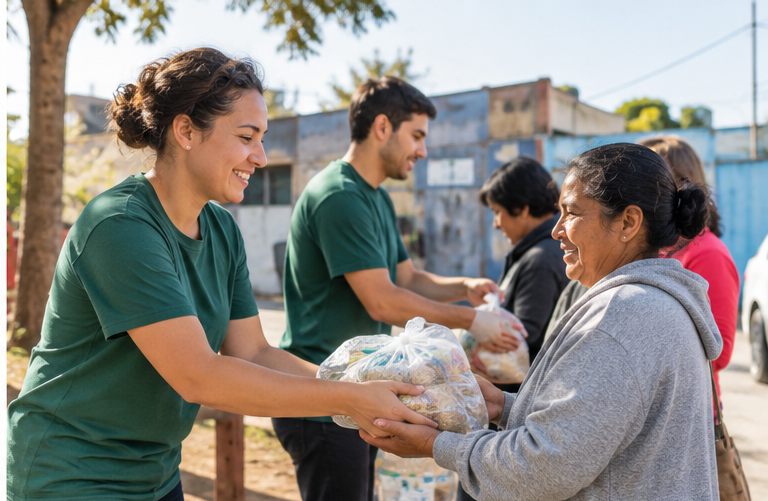
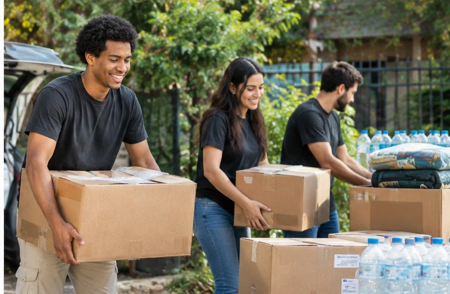

Campanhas de doação
As campanhas arrecadam alimentos e outros itens essenciais para serem destinados a ações comunitárias.
- Alimentos não perecíveis;
- Itens de higiene;
- Materiais para famílias atendidas.
Nossas ações são organizadas para incentivar a participação da comunidade e apoiar pessoas que precisam de auxílio.

As campanhas arrecadam alimentos e outros itens essenciais para serem destinados a ações comunitárias.
Voluntários podem ajudar na organização, divulgação e realização das ações sociais.

Se você deseja contribuir, faça seu cadastro e indique se tem interesse em doação, voluntariado ou nas duas formas de participação.